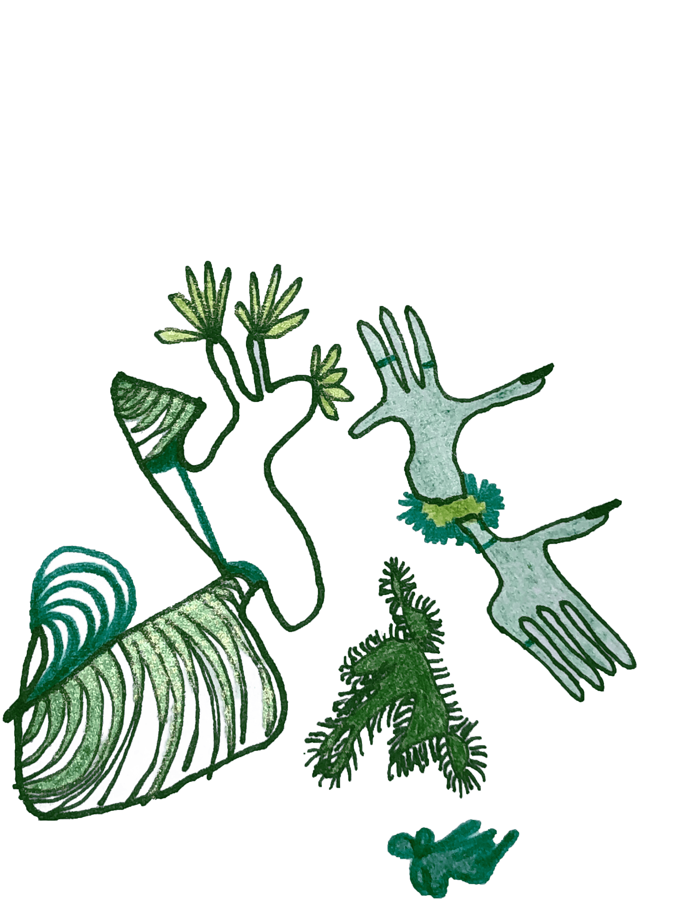

SOURCES text
SOURCES images
towards a guidebook for ecocritical graphic design
Bachelor Thesis
2020
Graphic Design
Royal Academy of Art,
The Hague
Berglind Brá Jóhannsdóttir
Supervision by Dirk Vis

What are the aesthetics of green?
I am here to answer that question and to hold graphic designers accountable for addressing, visually and conceptually, the nuances of the ecological crisis. Visual culture has neglected the issue for a long time, which has resulted in a lethal lack of public attention and discourse*. Neglect in a form of literal neglect, not touching** the issue, as well as neglect in the form of repetition, in allowing it to become a static visual of green nature, femininity and non-human-culture. A static visual that predominantly appeals to a certain type of person. Which in turn causes it to appeal less to other types of people... The fear of being stereotyped is a force to be reckoned with! And I have grown bitter.
Since 2018 when Greta Thunberg and her protest sign, black on white “Skolstrejk för klimatet”, started gaining momentum, the climate crisis has become a hot topic. Since then practices and projects related to the issue have popped up all over the field of graphic design. A new generation has managed to get out of the rut, and seems to be aiming to keep it cool. Hopeful devotion.
What does this hopeful devotion enlist? And how should it be continued? How can I start an argument about it in order to shape it?
What should I be aware of when dealing with this issue as an environmentally responsible graphic designer, moving forward?
I am facing my bitterness so I can move on with my life.
Notes:
* I am well aware that there are a billion more factors, but I will claim that this “neglect” or oversight has been impactful in determining the (low) level of public interest. The power of graphic design should not be underestimated!
**
↓
According to the Cambridge Dictionary, nature is “all the animals, plants, rocks, etc. in the world and all the features, forces, and processes that happen or exist independently of people, such as the weather, the sea, mountains, the production of young animals or plants, and growth”.1
“It is very easy to sit at a bar in, say, La Scala in Beverly Hills, or Ernie’s in San Fransisco, and to share in pervasive delusion that California is only five hours from New York by air. The truth is that La Scala and Ernie’s are only five hours from New York by air. California is somewhere else.”2
(I had to involve California somehow. Everybody dreams of California. Everybody has that T-shirt, or saw somebody wearing that T-shirt today. I’m wearing that T-shirt as I write this! It is the common denominator.)
I’ll say: It is very easy to sit at a Café in, say, The Hague, and to share a picture of the burning Amazon on facebook and caption it “nature is dying”. The truth is that the Amazon is dying. Nature is not.***

Notes:
*** When I started writing this thesis, the Amazon was burning. Now Australia has been handed the torch.
↓
“Green has become our synonym for sustainability, but such a colorful ascription begs the question of exactly what mode of being we are attempting to sustain, and at what environmental cost.”3
This is a quote from the introduction of a book I recently bought: Prismatic Ecology, Ecotheory beyond Green. It is a collection of essays that each look at the climate crisis and the ecosystem we, humans, live in through a certain color — White, Red, Maroon, Pink, Orange, Gold, Chartreuse, Greener, Beige, Brown, Blue, Violet-Black, Ultraviolet, Grey, Black and X-Ray.
White-ecology, on silence, ice, music and — though briefly — white people.
Red-ecology, on blood, animal slaughtering, waste and rupture.
Blue-ecology, on depression, literature and the ocean.

If I were to write an ecological essay from the perspective of one color, I would probably (if I weren’t writing this one on green right now) be on Purple, the same purple as royalty wore in olden days because it was so rare and ‘hard to handle’ and got deeper and more vivid as time passed.3
Or greenscreen-green, or Magenta.
Any colour that is in danger of going extinct with us humans as our selfinflicted doom nears. I would not put the color green in that category.
But this essay is not that essay. This is my green essay.
I must say that I am inspired by Erykah Badu’s dj set for a NTS series on the sound of colors. Erykah’s set is The sound of Green5, and each time I listen to it (I have replayed it enough times to say “each time”), I am reminded of how multifacited the color green is. And how much I love it. And how sad it is that I have developed a deep hatred or bitterness towards it through environmentalism.
So what does green mean?
Money, Capitalism, Dollar-Bills, Greed, Weed, Poison, Bad Smell, Fart, Envy, St. Peters Day, Frogs, Kermit the Frog, Aliens, Lime...
Left green political parties, “Green New Deal”, Nature, Sustainability, Eco, Environmentalism, ...Climate Crisis?
↓
It is ironic that green stands for both Capitalism (Money) and Environmentalism (Nature). Capitalism is built on consumerism, which is rooted in Romantisicm6. Romantisicm, as well as creating Consumerism, shaped poets that have insipired modern environmentalists to action with their work about the sublimity of nature and man’s corruption of it7. Modern environmentalism and modern capitalism were both born out of romance. They are love-children. They are love-siblings.
In the Romantic period, the concept of nature became sublime8. Some felt it in a form of transcendence of the human experience, when becoming “suddenly, painfully aware of her radical material identity, her likeness to Earth”9. Others have been more critical of it’s human-inclusiveness, stating that the natural sublime has often been theorised as a “powerful authority” rather than a system that humans experience themselves a part of. When faced with the natural sublime they ‘become suddenly, painfully aware of their radical powerlessness, their distance from Earth’. The sublime nature as a magnificent large thing that one can see over there which makes one feel very small, distant and ordinary in their ordinary world. Timothy Morton calls this an authoritarian sublime. “It’s a sublime of “get used to it, we are in power, you are not”. [...] It’s irrational, there’s no arguing with it. [...] You can’t reason with it.”8
This division between the sublime nature and the ordinary human allows for the human to become a consumer of the sublime nature. It creates subject (human consumer of nature) and object (nature), and the object, being more powerful, overwhelmes the subject. The object is not something the subject can fully grasp, so instead the subject ideolizes the object. The subject treasures the object as a concept. “Your consuming the idea of consuming. That’s the essense of consuming.”8 Nature is a Birkin bag. I know I will never get a hold of it, but I will forever dream.
In order to become a consumable object, the thing has to become concrete. And that is exactly what ideology shapers, from the Romantic poets of the days of yore to the graphic designers of today have made of environmental consiousness. Concrete, knowable, distinguishable, sellable. It has been made into a fixed, consumable, object, that can be taken or left. Never joined. It isn’t a web of different styles and subjects and things, it’s not a web at all, it’s “nature”. An object in a form of style that consumers are made familiar with and can either take or leave. I can’t count the times I have been complimented for my environmentalism as if I were being complimented for a cute outfit, the compliment coming from somebody who can very comfortably appreciate my “style” without feeling any need to apply it to themselves. In this way enviromentalism has become a posterchild for consumer-culture. If environmentalism and capitalism are love-siblings, then capitalism is the older sibling and environmentalism is the younger sibling that copies everything capitalism does. How can we step away from our over-consumer culture when our means of doing so, and our visual inspiration, is through an ideology identical to the broken one, of an objectified other?
This objectified concept of nature as sublime is more often than not one of “pure” nature.

This is an image of nature. Taken by North-American photographer Ansel Adams in Yosemite National Park in 1938. Adams claimed to never ‘take’ landscapes as he considered the word to contribute to “the humanisation process which leads only to the exploitation and ruin of nature: ‘landscape’ is where nature ends.” In other words, nature ends where humans begin. “The America offered by Adams is one which appears almost unaware of the arrival of Columbus.”10
This idea that pure nature is what nature looked like when white men (Columbus or Cook or Lewis and Clark arrived in their colonies is a misconseption. That “pure” nature had in fact more often than not been altered by the people who lived there before their arrival.11
Besides the fact that our idea of “pure” nature is not untouched nature, the idea of “untouched” nature pushes nature outside of cities, ‘out of reach’ (Gabrielle) of “common people” (Pulp). It becomes elitist. Nature gets reserved for the wealthy few who can travel, and in some cases pay, to see it. This is the kind of “glossy, super glossy, high gloss” edited nature you can see in documentaries like, as Emma Marris pointed out especially, ‘Planet Earth’. If what we see on Planet Earth is nature, then what is my pot plant, what are the mice in my kitchen, what are the pigeons-lovebirds on my balcony and what am I? Insignificant at best. “there has long been research to support the kind of common-sense notion that if you watch a lot of porn you’ll stop finding your wife beautiful, and that’s what’s happening with nature. If you watch a lot of nature porn you will stop finding your garden and your street beautiful. And it’s a damn shame and I hate it.”12
This idea of nature as something beyond human reach, literally as the endgoal seems to be to have it (consume it) completely untouched, is completely paralizing. This eludes to the common environmentalist attitude, sometimes referred to as the ecocritic’s epiphany, that “(1) nature, which is refreshingly simple, is good; and (2) that culture, which is tiresomely convoluted, is bad; or (3) at least not so good as nature.”13
Good object nature and evil subject society7. Although this division is obsurd, it is omnipresent, and the situation is then treated by putting the good on a pedestal and dismissing the evil, as is apparent if you search for image results for any environmentist related word you can think of. ,,Einhversstaðar verða vondir að vera”14 (e. “the evils have to be somewhere”), and following this strategy within this dualist ideology, the evils are nowhere to be found.
Within this inescapable dualist green culture I have encountered a few common principles.
↓
Firstly.
Nature is, in most cases, female.
Mother Earth, Mother Nature, ‘Universal Mother’, ‘Gaia’, Ísafold, I could go on...
She often appears in contrast to God who is a Father. (Traditionally, looking at Christianity here specifically, because that is what I was raised with and I think it is safe to claim that a large majority of the heavy-carbon-dioxide-emitting-people of the world grew up around some kind of Christian religion). (On the flip side, some also believe that the climate crisis is happening not because we are sinning against mom, earth, but because we are sinning against dad, god, and he is punishing us by increasing the birth pangs of the return of Jesus Christ.)15
To quote Octavia E. Butler’s character in Parable of the Sower: “A lot of people seem to believe in a big-daddy-God or a big-cop-God or a big-king-God. They believe in a kind of super-person.”16 And this is how many people view Nature as well, a super-person, a big-mama-Nature.
While man-made towers are looked upon as phallic powerstructures, each rupture or tunnel on the surface of earth can somehow be a potential vulva or vagina, be it an ancient cave in France or an drill-hole for oil. Although this idea has it’s charms — the femininity of nature — it is quite patriarchal in practice. “Throughout pre- and early modern Christianity, women were associated with the body, its porousness, openness, and vulnerability. Female bodies were believed to be more labile and changeable, more subject to affective shifts, and more open to penetration, whether by God, demons, or other human beings.”17 Historically, woman has the vulnerable, penetrable body > man has the mind and the power to penetrate, ...and those are the two genders. By that reasoning, Nature as feminine has the vulnerable, penetrable body > Human as masculine (or even big-daddy-God) has the brains and the power to penetrate. I am very aware that I am reaching for old gender stereotypes here. Although they might not still apply so clearly, traces of them remain. Eco-feminists have stated that “The social mentality that leads to the domination and oppression of women is directly connected to the social mentality that leads to the abuse of the environment”18 and with this clear feminization of nature, along with the treatment and mixture of disinterest and mystification of it, it is hard to disagree.
“Exactly 40 years ago, scientists from 50 nations met at the First World Climate Conference (in Geneva 1979) and agreed that alarming trends for climate change made it urgently necessary to act.”19 A year before that meeting, Anglea Miles, in a text about Susan Griffins literature, wrote: “the source of women’s central role in progressive struggle today, lies in our recognition of the deep separateness of woman’s world from man’s world. When women move we move from a unique position on both sides of the man/nature divide (and all other divisions of society as well). Our struggle for liberation is not merely linked to the ecology or environmental struggle, but is the deepest and most profound expression of that struggle. Our affirmation of ourselves is necessarily the beginning of the integration of all the dichotomies which structure and divide the male dominated and alienated world.”20 A year before the writing of this thesis, Elvia Wilk wrote: “non-men, constantly made aware of their physical penetrability, disallowed from forgetting their bodies and bodily boundaries, have been producing empathic knowledge regarding the confrontation with the unknowable for centuries.”17 This division between man and nature on the one hand and man and woman on the other, along with the cultural connotations of nature=woman and society=man are a destructive blend. One that has a deep impact on the way that people, and graphic designers, approach the climate crisis.
The de-masculinization of Nature could be one of the reasons why men often have a hard time connecting to environmentalism. Take veganism for example, one of the most effective lifestyle changes a single person can make to combat climate change. The main reason someone would become vegan is to either protect animal rights (Nature) or to reduce their carbon footprint. In Iceland — or not in Iceland, on Facebook rather, but in Iceland base community on Facebook — there is a like-page called ‘Vegan Ísland’. It is for vegans, soon-to-be vegans and vegan-curious’s. One of the admins of the page wrote an article earlier this year stating that according to estimations, 65-78% of all vegans at that time were female. He also pointed out that only 14% of worldwide participants in Veganuary (a challenge where participants are vegan for the month of January) were men. He then narrowed the view down to that specific facebook page and reveiled that memebers of the group were 63.1% female, 0.3% other and 36,6% male. Out of those members not all are active vegans and a lot of people are only there to “watch the discussion and correct misunderstandings”, and in most cases those people are men. When the article was published, the group had 1.286 people blocked/banned from the group due to inappropriate behaviour, such as making fun of veganism or encouraging meat-eating. He claimed that about 90% of those people were Icelandic men and boys and the other 10% were foreign spammers or fake accounts.21 This masculine hostility towards veganism might stem from an inability to emphasize with a female representing Nature, which is enforced through visualisation. Nature is soft, cute, light-green, feminine, fertile, kind, blooming, caring, vulnerable... All things non-typically-masculine.
Now, my point is not to encourage toxic masculinity by suggesting we not use feminine connotations. But I think we, environmentalist visual communicators, need to branch out. The climate crisis is not a women’s problem (although it affects women disproportunately22), and linking it this strongly to exclusively feminine values in a, still, patriarchal society will not solve it/slow it down in 11 years (10 years when this is published). Also, why should nature be assigned a gender?
↓
I’ve established that environmentalism, most importantly right now the fight against the climate crisis, is visually ‘Green’, ‘Nature’-al and ‘female’.
I have found that within this structure of Nature (‘Green’, ‘female’) good, Culture bad there is nuance of dinamic between the two, that lies in the question of who is the protagonist and who is the antagonist, or victim, if you will. The outcome depends on how you categorize Nature. She can be categorized as either A) passive or B) aggressive. We either need to protect her or tread lightly around her so that she won’t take revenge on us.
A) Passive, good, innocent, fragile, hurt (Society: bad, pretator. You: potential white knight). This category holds phrases such as: “Save the planet”, “The Planet is dying”. (The words ‘nature’ and ‘planet’ are used interchangeably in this context. The Planet is kind of an expansion of Nature, it is Nature in a larger context. However, The Planet is still a far cry from society.) Environmental activist and Grease icon, Olivia Newton-John, even went so far as to say that humans are the Planet’s parents21. Yikes.
Visuals: cute, friendly, caring, open palms holding earth/nature, protecting hands around earth/nature (this disproportunate size of hands around a tiny earth eludes again to the “we are the parents of the earth” idea from ONJ, Earth as a tiny little newborn baby), leaves, colourful drawings, cute animals, flowers, diy, amateur crafty, childish, rough stencils, cardboard, tape, green, green, green.
B) aggressive, angry, punishing, a bitch holding a grudge, authority, beast (Society: naugty, guilty. You: remorseful). ‘Gaia Screams’ 90’s animal rights zine. Marvin Gaye’s ‘Mercy Mercy Me (The Ecology)’. In a panel discussion I watched on the Anthropocene, the topic of whether we, humans, were poking or stroking the beast was briefly discussed.7 I can furthermore think of a handful of poems which all beg Nature for forgiveness for our sins. Nature as a whole is percieved as “greater than the sum of [it’s] parts” and transforms into “some kind of gigantic invisible being that is inherently hostile to little us. We are about to be subsumed, the drop is going to be absorbed into the ocean)”24
Visuals: weeds growing through sement, against all odds, fire, volcanoes, floods...
This category is a bit harder to spot visually. It’s often rather the subtitles or transcript that place Nature as the perpetrator. But nature is always a character. (Like New York is a character in SATC, but more blatantly obvious.) Nature is constantly placed up against Culture. And Nature will always prevail.
It is interesting to learn that many of the major environmentalist leaders in the history of the movement, for example Julia “Butterfly” Hill who I mention later in this text, were brought up within a evangelical religion. Just as the main character in Octavia E. Butler’s earlier mentioned book, ‘Parable of the Sower’, many of them gave up their faith, often as an act of “rebellion against their fathers”, and applied their method of religion instead to a worship of nature. This evangelic culture might be part of the common tendency within environmentalism to feel as if we must fear nature, and repent, as it holds the power of damnation. However, this ‘Jerimiad’ way of presenting the problem only speaks to a very limited public.26 This idea of authoritarian nature, nature we must respect in order for it to leave us alone, might be getting in the way of us realising that we have the power of choice and with it we hold the power of damnation. There is no authority, we are not under or over nature, we are equal to it and part of it. And we can choose to live on within it.6 In houses, with electicity and art on the walls and curtains for when we want to hide away from the rest of it all. New visuals should, as far as I'm concerned, help us as a collective understand that.
↓
When analysing imagery from the recent Global Climate Strikes these categories are quite prevelant. This past December I searched for “global climate strike 2019” on Google. Here are examples to be found on the first images that popped up:
↓

Octavia E. Butler, wrote in Parable of the Sower:
“All that you touch
You Change.
All that you Change
Changes you.
The only lasting truth
Is Change.
God
Is Change.” 16
“One should not say, ‘the tree is green,’ but ‘the tree greens’”27 Emile Brehier wrote. And to that Stoic ideology John Cage added, the world “is not, it becomes! It moves, it changes! [...] The world, the real is not an object. It is a process” 28. Charles Ives, stating that “A painter paints a sunset” asked himself “can he paint the setting sun?”29.
Apparently, a Native American word for "beautiful" is "alive".30 You could say that once something becomes, it dies. ,,Hún er öll” you can say about someone who has died (in Icelandic), “she is all", or "she has become all she will be". Once something has been for a while and is no longer becoming in any sense — once it no longer attracts any new narratives — it dies. Once a visual culture becomes stagnant, it's ideology suffers recession. The dynamic which attracts attention and interest is lost.
“What is the truth of ecology, insofar as this truth is addressed by literature and art? and How well—how ably, how sensibly, how thoroughly—do literature and art address this truth? Both questions have usually been ruled out of court in literary and cultural studies, thanks to a widespread skepticism about and blasé attitude toward the natural world. I share with other ecocritics a negative feeling about this blasé attitude, and I understand their scorn for what sometimes seems to me, too, to be a cheap skepticism. However, I think a more effective counter to cheap skepticism than the renewal of belief in the veracity of the text is a skepticism that does its fair share, earns its keep, and pays its way, while never lapsing into indifference. So I would like to add another question to the ecocritical agenda, a question inspired by Umberto Eco. Does the truth of ecology lie “in” literature and art?”31
Probably. Truth is what we make of it. The scientific “truth”, or consensus, concerning the climate crisis is clear. The cultural “truth” on the other hand has become outdated and should be renewed to match the scientific one. Therefore what is lacking in the “truth” is the artistic side of it, the cultural side. And that side can only be found within the field of literature and art. There it lies. Beside itself.
I would like to hold graphic designers accountable for contributing to the general inaction of the last 50-years-or-so with their neglect in addressing, visually and conceptually, the nuances and human-side of the issue, resulting in a lethal lack of public attention and discourse. They have failed to nurish this “truth”.
The lack of aesthetic and ideological diversity when it comes to ecological problems is due to a lack of ecology-related art. The ecological crisis is such a recent phenomenon [somewhat... not so very] that the arts and politics haven’t had enough time to digest it, to throw back and forth ideas, fight and argue about concepts, ideology and visuals. Until recently, the job of discussing the climate crisis has been mostly left to scientists and journalists, but when forming cultural concepts, people from all different fields have to contribute to the discussion: graphic designers are as important as novelists, statisticians, geographers, mathematicians, politicians, economists, anthropologists and philosophers. Bruno Latour divides the stages that a problem has to go through in order “to render us publically sensitive” into:
1. The scientific aesthetic. Which has not been lacking when it comes to the climate crisis.
2. The artistic aesthetic. Art has to “define the characters” of the problem that are to “play on the political scene”. This has been lacking, leading to the fact that “we don’t know even what the issues are. It’s very difficult to visualize them.” In this aspect, artists, including graphic designers, have failed.
3. The political aesthetic. Latour suggests that the problem with the ecological crisis is that the concept went into politics prematurely. That it hadn’t been well enough rounded by the artistic fields before it got thrown into the political world. That the difficulty of grasping the concept had been wildly underestimated as well as “the speed of which it needed to be domesticated so to speak and made politically relevant.” “There is no political sensitivity” because there is no artistic sensitivity. 32
According to Dana Phillips, “rejecting theory leaves ecocriticism without a rationale for supporting its own assertions and minus the tools required to develop such a rationale: it can’t get started. Meanwhile, the treatment of nature as something insubstantial by literary and cultural theorists bears us away from the shores where, despite all the things we’ve done to ruin them, we still must live.” She goes on to argue that we should thrive to “disenchant ecocriticism”. That we must try to stop idealizing nature as something sublime and perfect in order to be able to start a discussion and, essentially, an argument about it. “It needs to involve both vigorous internal debate and the painstaking working out of new insights that might make ecocriticism’s argument more persuasive to outsiders and to insiders, too, than it has been thus far.”31 The environment is in desperate need of more conflict sprung from artistic differences.
↓
Artists and designers have collectively procrastinated on this topic for centuries, with few exceptions. Latour suggested that the “climate is something so complex and big and hard, so we need many years of art and scientific collaboration to begin to have the right characters for politics.”32 But I would argue that this lack of nuance is not due to lack of time, but rather lack of interest. A lack of interest due to boring (in my humble opinion) and repetitive, exclusively "nature"-related visuals and connotations. Along with, quite frankly, a fear of the hippie label. The first Earth day was held in April 1971, and that same year Greenpeace was founded. Marvin Gaye released ‘What’s Going On’ with singles such as ‘Save the Children’ and previously mentioned ‘Mercy, Mercy Me (The Ecology)’.
“Father, father, everybody thinks we’re wrong.
Oh, but who are they to judge us simply because our hair is long”33
Hippies were going out of style. Carol King’s ‘It’s Too Late’ was a hit.
Jimi Hendrix and Janis Joplin were dead.
Jefferson Airplane’s ‘White Rabbit’ was 4 years old.
That year, the year The Mamas and the Papas broke up, my parents were born. And their generation, the generation of 80’s teenagers in the hayday of artific and capital, grew up viewing hippies as weirdos, people who refused to grow up and face the real world. Being called a hippie, in their lifetime — and mine for that matter — has seldom been considered a compliment.
The hippie stereotype brewed into the late ninetees, when Julia “Butterfly” Hill lived in a tree for two years (and saved it from being logged), and stuck to anybody who cared for nature. Environmentalists were hippies and treehuggers****. Even to this day. Recently I had a conversation with a friend who was worried about the U.S. Democratic Party’s chances of getting elected in the 2020 presidential elections if their candidate were to be some radical “hippie” type. And sadly, he might be right. The stereotype is strong, the stereotype of an environmentalist is basically [although tides are changing] a euro-hippie. A white kid with dreadlocks wearing baggy clothes and listening to reggae. Not what many people neccessarily strive to be equiated to. Not the best look. Not that any look is necessarily the best look.
A beast of burden is an animal, often an ass or a donkey, that is used to carry heavy loads.34 It can also be used to describe — aside from an “overweight and gruesome female that has not been blessed in the physical appearance department” — someone who carries other people’s loads.35 The environmentalist is a beast of burden. They carry the weight of the world on their shoulders, because they are that type of person. And I mean this in a sense of environmentalism being their “týpuálag”, or roughly translated ‘stereotype load’. “Týpuálag” is a load that one carries as part of their personal style, which is always shaped by a larger group of people (it is not personal in a sense of it being singular but as it being assigned to a person). It is something you feel you should wear, do or care about in order to be recognised as the type of person you want to be known as. It is a responsibility toward yourself, a responsibility you hold yourself accountable for in order to become who you want to be. And this is what environmentalism has become. It is a topic that people care about because it fits the certain stereotype mold they are comfortable with. Since environmentalism became a thing, the visuals connected to the environment have mainly catered to people who feel a deep connection to Nature as a concept, who feel themselves a bit of an outsider to society and as somehow a mediator between the two, nature and culture. Yes, it is important that people that identify with that stereotype care about environmental issues. But visuals that only reach that type of person, and that keep those environmentalist stereotypes afloat, are highly unsufficient to inspire humans as a collective to survive the 21st Century. We need to branch out. We need all stereotypes of people to carry the burden. We need visuals that are exciting, beautiful, striking, pink, ugly, punk***** ... etc. etc. etc. all that you can imagine. Something for everybody. Appeal accross the board.
Notes:
**** The treehugger I have in mind when I think about the word looks something like Julia “Butterfly” Hill, however the original treehuggers come from a very different background.
In 1700s India, king Jodhpur gave instructions to cut trees to make way for a new palace in Rajasthan. He was confronted by a religious environmental conservation group, the Bishnois, who believed that killing an animal or cutting a tree was blasphemy. A woman from the group protested with her body by hugging one of the trees and refusing to let go. More joined in and eventually 363 people were killed for hugging. When the king heard of this he stopped the operation and the trees were saved. In the 1970’s the Chipko Andolan (the movement to hug trees) was formed in India when people, inspired by the Bishnois, continued the tradition of huggin trees in order to save them from being cut by lodgers.36
***** On my quest for fresh environmental visuals I found a 00’s punky zine, connected to far left green anarchism. ‘Green Anarchy: An Anti-Civilization Journal of Theory and Action’, a magazine based in Eugene, Oregon in 2000-2008.37 This I was not aware of before and was happy to find, although the movement reaching far left anarchist activists is not such a large step from the euro-hippie, stereotypically thinking.
↓

Richard Lanham calls our economy an “information economy”. The currency of choice in this economy is human attention, it is “the most precious resource”38. I would argue that part of the reason is the fact that attention has become directly scaleable.
“It is very easy to sit at a Café in, say, The Hague, and to share a picture of the burning Amazon on facebook and caption it “nature is dying”. After having done so, I can see — in digits — exactly how much human attention it attracted, and I can use that data to compare it to other posts or, if I get enough attention and that is my shtick; sell it to a third party and make a living. Ultimately, what determines how much attention my post will receive, and how large I can live accordingly, is style. My personal style, and the style of the post. Aesthetics. Style regulates attention, as Lanham has suggested, “attracting attention is what style is all about”. In this information economy, the role of “stuff” has been taken over by information, the role of substance has been replaced with style 38. If we think of attention as value, then we can think of the style of that attention as it’s currency, like Euro’s or Yen’s. Right now environmentalism is only available through a chosen few currencies.
It should be available in all...
“In an economy of stuff, science and technology rule, but in an economy of style, arts and humanities take over. “They are the disciplines that study how attention is allocated, how cultural capital is created and traded.” Aesthetics and design represent the most potentially valuable economic mechanisms today.”38
...and graphic designers can make that happen.
↓
Since last year (when written), 2018, when Greta Thunberg and her protest sign, black on white “Skolstrejk för klimatet”, started gaining momentum (as Severn Cullis-Suzuki tried to in Rio in 1992 but artists didn’t follow suit), the climate crisis has become a hot topic. Since then practices and projects related to the issue have popped up all over the field of graphic design. A new generation has managed to get out of the rut, and seems to be aiming to keep it cool. Hopeful devotion.
Now, 11 years from doom (again, 10 when published) eco-design is becoming more diverse in style, appealing and alive! With designers and initiatives such as: Adapt, It’s Freezing in L.A., Hot Hot Hot!, no Planet no Fun, Do The Green Thing, Worm, The Earth Issue, The Beam, Fridays for Future, Extinction Rebellion, The Sunrise Movement. The topic has been featured in magazines such as Dazed, AnOther and It’s Nice That and multiple social media, particularly instagram, lifestyle and meme accounts such as Fashion Revolution, basicenvironmentalist and climemechange have grown in popularity. And the list goes on. I will also mention Vivienne Westwood in this category, although not part of a new generation she has been fighting the good fight for some years now and has been a large inspiration for me when it comes to working with this topic. I found reassurance stumbling upon her activism at a time when it felt like nobody within the artistic field cared about the topic.
The questions remain:
Is this new wave strong enough to rock our nonchalant world?
Is it a single wave or is it a new permanent condition, a changed climate?
↓

What does this hopeful devotion enlist? And how should it be continued? How can I start an argument about it in order to shape it?
What should I be aware of when dealing with this issue as an environmentally responsible graphic designer, moving forward? Whith what do I replace my bitterness?
On my quest for guidance, I found a few rulebooks. The first one looked like this:
Rendering me instantly uninterested.******
So I went with another one.
The guidebook I will rely on is ‘Climate Visuals: Seven principles for visual climate change communication (based on international social research)’ and was published in 2016 by Climate Outreach and Global Call for Climate Action (GCCA). They work in collaboration with climatevisuals.org, an organization that has created a evidence based database of climate photography for use in communication.
In the guidebook they claim that “while research on the verbal and written communication of climate change has proliferated, our understanding of how people interpret visual images of climate change is limited to a much smaller number of academic studies, which do not provide much in the way of practical guidance for communicators. As a result, the iconography of climate change has remained relatively static”. After social experimentation, they came up with seven principles for visualising climate change:
“1. Show ‘real people’ not staged photo-ops:”
They found that people respond most to imagery of real people, ‘authenticity’ is key. Staged images are considered “gimmicky or even manipulative” and politicians hardly get any attention. This speaks to idea of the stereotype. People relate to other people who they feel are similar to themselves.
So, more environmentally concerned relatable people! Enough endangered wildlife for now, it has become quite apparent that very few people really care.
“2. Tell new stories:”
Cliché’s “such as smokestacks, deforestation, and polar bears on melting ice”, were found to be prone to catch the viewers attention, however they did not show any sign of sparking a “deeper debate” as they would rather tend to trigger “cynicism and fatigue” within discussion groups. “They are effective ways of communicating to an audience that ‘this story is about climate change’”, and they may be “useful for audiences with limited knowledge or interest in” the topic. But they are tiresome.
The team found that “less familiar (and more thought-provoking) images can help tell a new story about climate change, and remake the visual representation of climate change in the public mind.” And I think this reaffirms the point that I have been trying to make throughout this essay. That the movement is in dire need of new visuals that tell different stories. Stories not of “nature” but stories of “culture”. Stories of a culture that does not live in a glass jar with a closed lid like a sourdough starter, but a culture that that is open and pours over and affects all other cultures, be they “pure” or “wild” or “natural” or “societal”. A culture that is responsible, whether it takes responsibility or not. A culture where the burning Amazon has just as much to do with Coachella or Kim Kardashians West’s social media presense as it has to do with endangered koala bears or plastic oceans — if not more.
[insert twitter correspondence from Kim K "climate change is real (broken heart)".]
“3. Show climate causes at scale:”
“We found that people do not necessarily understand the links between climate change and their daily lives [understandably, since most of their lives don’t take place in ‘nature’]. Individual ‘causes’ of climate change (such as meat-eating) may not be recognised as such, and if they are, may provoke defensive reactions. If communicating the links between ‘problematic’ behaviours and climate change, it is best to show these behaviours at scale – e.g. a congested highway, rather than a single driver.” It is the system that is broken, so presenting the chain instead of individual links of the chain does make sense and is worth trying. (However, this instant tendancy towards defence needs further analysation, in another essay.)
“4. Climate impacts are emotionally powerful:”
People tend to be “moved more by climate impacts – e.g. floods, and the destruction wrought by extreme weather – than by ‘causes’ or ‘solutions’. Images of climate impacts can prompt a desire to respond, but because they are emotionally powerful, they can also be overwhelming. Coupling images of climate impacts with a concrete behavioural ‘action’ for people to take can help overcome this.”
“5. Show local (but serious) climate impacts:”
“When images of localised climate impacts show an individual person or group of people, with identifiable emotions, they are likely to be most powerful. But there is a balance to be struck (as in verbal and written communication) between localising climate change (so that people realise the issue is relevant to them) and trivialising the issue (by not making clear enough links to the bigger picture).”
“6. Be very careful with protest imagery:”
“Images depicting protests (or protesters) attracted widespread cynicism and some of the lowest ratings in our survey. [...] images of (what people described as) ‘typical environmentalists’ only really resonated with the small number of people who already considered themselves as activists and campaigners. Most people do not feel an affinity with climate change protesters, so images of protests may reinforce the idea that climate change is for ‘them’ rather than ‘us’. Protest images involving people directly affected by climate impacts were seen as more authentic and therefore more compelling.” This might have changed a bit since 2016 with Greta Thunberg's influence and the Global Climate Strikes. I would argue that the recent protests would mostly fall into the latter category, the category of “people directly affected by climate impacts”, as they are notoriously populated by young people who see their own future in flames.
So yes, be careful with protest imagery. But use it nontheless. Give protestors the attention they are begging for. But seek out the protestors that are atypical or have innovative or curious points of view. Place protestors that expand the visual connotation of the climate crisis in the spotlight. Show something new.
Welcome new takes. We need them.
“7. Understand your audience:”
In their final point, they stated that “images of ‘distant’ climate impacts produced much flatter emotional responses among those on the political right”, and that “images depicting ‘solutions’ to climate change generated mostly positive emotions”.
More importantly however, they stated that the level of concern or scepticism each audience had about the climate crisis, ultimately determined how they reacted to the imagery presented.40 So simply, if you are already concerned with the topic you will respond well to the imagery, if you are not you will not. This clearly shows that there must be some attention factor missing in the visuals. If the visuals we rely on to ‘tell the story’ cause the story to only reach those who already know the story, then why bother? In order for the story to be heard by a larger audience (which is vital in order to get people into power that are serious about the issue), we need to get serious about creating new visual cultures around it.
The old ones are not sufficient.
They do not spark new interest.
They lack conflict, they lack diversity and they lack dynamic.
“Sensual experience is embedded in the very idea of sustainability,”38 It is the driving force. Sensual desire is what urges us, and all other creatures, to act — in any way. Lack of appeal is unsustainable and lethal. (A fully recycled and recycleable book about recycling can do more harm than good if it’s ugly.)
Which leads me to point nr 8., which I would like to add to the list along with points number 9. and 10.
8. Use appealing visuals (relative) rather than traditional ones:
I suggest this knowing that each designer will have a different idea of what is appealing. I would suggest they throw all notions of what green design******* looks like out the window and simply make what looks appealing to them at each time, never allowing the visuals to stagnate.
Look for climate related influences within your own interests, visual, concrete or conceptual, and bring them into the web of climate crisis references. First and foremost, look to expand the topic. Take a topic that has become concrete and objectified and try to liquify it, allow it to flow between different styles and ideologies. It is a completely overarching topic so it should land easily wherever you choose to touch ground. Surround it with a compelling web of references and styles. Everything applies. The further fetched the better. Strive to make the most outrageous connections. Fetch away!
9. Be very careful when assigning a gender to the problem:
Be aware of the patriarchy and understand that once you label the “object” as female, the issue it faces is likely to be considered less urgent and more niché. It is absurd write this, an abselutely ridiculous point to have to keep in mind, but here we are nontheless.
10. Avoid nature purism:
At all cost avoid seperating human culture from the climate crisis. Do not overemphasize Nature.
It has been tried. It didn’t work.
Notes:
****** Sorry to call a specific publication out like this. In my own defence, I did just call for more artistic differences and conflict.
******* “Contract magazine’s 2008 interiors awards jury remarked that the Haworth furniture showroom in Washington, DC, “shows you can create something that’s environmentally sensitive but doesn’t look like it.” In other words, looking green looks bad, so hide it, dress it up. The online design magazine Inhabitat proclaims that designer Yves Béhar’s projects “have always exhibited a deft balance between stunning aesthetics and sustainable design.” Beauty and sustainability need to be balanced, as if designing green requires a compromise or trade-off with looking good. Another Web site refers to “the constant battle between aesthetics and sustainability,” as if the two unavoidably conflict. [...] “In the apparent tug-of-war between sustainability and beauty, which should win?”38
↓
1. ‘nature’ definition by Cambridge Dictionary https://dictionary.cambridge.org/dictionary/english/nature 2. ‘Notes From A Native Daughter’ from ‘Slouching Towards Bethlehem’, book by Joan Didion. Published in 2017 by 4th Estate. Page 171. 3. ‘Purple’ episode hosted by Ernie Rea and produced by Catherine Earlam for series ‘Beyond Belief’ on BBC4. Released 17 December 2018. https://www.bbc.co.uk/programmes/m0001mnq 4. ‘Introduction’ to ‘Prismatic Ecology; Ecotheory beyond Green’, book edited by Jeffrey Jerome Cohen. Published in 2013 by the University of Minnesota Press. Page xx . 5. ‘The Sound of Green by Erykah Badu’, hosted by Erykah Badu, published 5 November 2018 as part of series ‘The Sound of Colour’ presented by NTS, Sonos & Hay. https://www.nts.live/shows/nts-x-sonos-x-hay-the-sound-of-colour/episodes/the-sound-of-green-erykah-badu-nts-x-sonos-x-hay-5th-november-2018 6. ‘Beautiful Soul Syndrome’ episode by Timothy Morton for podcast ‘Literature and the Environment’. Published in Fall 2008 by UC Davis. 7. ‘CEC14 / Closing Panel: The Anthropocene - an Engineered Age?’ Climate Engineering Conference featuring Prof. Dr. Dr. h.c. Klaus Töpfer (Institute for Advanced Sustainability Studies), Prof. Dr. Armin Grunwald (Karlsruhe Institute for Technology), Prof. Clive Hamilton (Charles Sturt University), Prof. Thomas Ackermann (Joint Institute for the Study of the Atmosphere and Ocean), and Oliver Morton (The Economist) in the Haus der Kulteren der Welt in Berlin in 2014. Published August 28th, 2014, by IASS Potsdam. https://www.youtube.com/watch?v=C9huFiOo3qk around minute 39:21 8. ‘Consumerism’ episode by Timothy Morton for podcast ‘Literature and the Environment’. Published in Fall 2008 by UC Davis. 9. ‘Introduction’ to ‘Environmental Criticism for the Twenty-First Century’, book edited and introduced by Stephanie LeMenager, Teresa Shewry, and Ken Hiltner. Published in November 13th, 2012, by Routledge. 10. ‘The Complete Essays 1973-1991’ book by Luigi Ghirri. Published in 2016 by MACK. Page 152 11. ‘The Future of Nature: Conservation in the Anthropocene with Emma Marris’ lecture by Emma Marris at the University of California. Published May 16th, 2019, by University of California Television (UCTV). https://www.youtube.com/watch?v=eZnAompGPVE&t=1329s Minute around 1:34 12. ‘Emma Marris and Ellis Erle | Dialogue | The Anthropocene Project. An Opening’ dialogue between Emma Marris (Autorin, Columbia) and Erle Ellis (Department of Geography and Environmental Systems, University of Maryland, Baltimore) at Haus der Kulturen der Welt on January 12th, 2013. Film and Production by Dusan Solomun. Published January 24th, 2013, by HKW Anthropocene. https://www.youtube.com/watch?v=zNKcKuT92uo&list=PL6_eN0dmF5Pnn8tclVMQHkMAxjttKczzz&index=52&t=11s Minute around 44:26 13. ‘The Truth of Ecology; Nature, Culture and Literature in America’ book by Dana Phillips. Published March 27th, 2003, by Oxford University Press 14. ‘Um Drangey’ article by Árni Óla. Published September 2nd, 1934, by Lesbók Morgunblaðsins. Full quote by Guðmundur biskup Arason “Þegar Guðmundur biskup Arason vígði sigstaðina í Drangey, ljet hann þetta berg óvígt, því að bergvættur átti að hafa kallað til hans og mælt: „Hættu að vígja, Gvendur biskup, einhversstaðar verða vondir að vera”.” http://timarit.is/view_page_init.jsp?issId=239819&lang=fo 15. ‘Mary Colbert: Sin, Not Climate Change, Is Causing Extreme Weather and Natural Disasters’ article by Kyle Mantyla for Right Wing Watch. Published June 11th, 2019, 1:54 pm. https://www.rightwingwatch.org/post/mary-colbert-sin-not-climate-change-is-causing-extreme-weather-and-natural-disasters/ 16. ‘Parable of the Sower’ book by Octavia E. Butler. Published in January 2007 by Grand Central Publishing. 17. ‘The Word Made Fresh: Mystical Encounter and the New Weird Divine’ article by Elvia Wilk for E-Flux, Journal #92. Published June 2018. https://www.e-flux.com/journal/92/205298/the-word-made-fresh-mystical-encounter-and-the-new-weird-divine/ 18. ‘Post-colonial Women Writers: New Perspectives’ book written by Sunita Sinha. Published in 2008 by Atlantic Publishers & Dist. Page 10 19. ‘World Scientists’ Warning of a Climate Emergency’. by William J. Ripple, Christopher Wolf, Thomas M. Newsome, Phoebe Barnard, William R. Moomaw, and 11,258 scientists signatories from 153 countries (List in supplemental file S1) for BioScience, Volume 70, Issue 1. Published November 5th 2019. Downloaded from https://academic.oup.com/bioscience/advance-article-abstract/doi/10.1093/biosci/biz088/5610806 by guest on 05 November 2019 20. ‘Women and Nature: The Roaring Inside Her’ SUSAN GRIFFIN, New York: Harper and Row, 1978, Pp. 263’ article by Angela Miles, York University. Further source unknown. 21. ‘Karlmenn og kjöt’ article by Ragnar Freyr for Flóra Magazine, Published December 4th, 2018. https://flora-utgafa.is/2utgafa/karlmenn-og-kjot/ 22. ‘How Climate Change Impacts Women’ article and video published March 1st, 2017, by NRDC https://www.nrdc.org/stories/how-climate-change-impacts-women 23. ‘Let’s Talk About Tomorrow’ song written by John Capek, Amy Sky and Olivia Newton-John. Single on album ‘The Rumour’, released in August 1988. 24. ‘Dark Ecological Chocolate’ lecture by Timothy Morton for Sonic Acts - 2017 25. ‘Nature Is Speaking – Julia Roberts is Mother Nature |Conservation International (CI)’ film by Conservation International (CI). Published October 5th, 2014 https://www.youtube.com/watch?v=WmVLcj-XKnM 26. ‘Weather and Imagination’ roundtable discussion featuring Deborah Coen, Sheila Jasanoff, Anthony Leiserowitz, Stephanie LeMenager, and Ben Orlove. Published January 17th, 2008, by philoctetesctr https://www.youtube.com/watch?v=MRnmhazQKKg 27. ‘La theorie des incorporels dans Lancien stoicisme’ by Emile Brehier (Paris: Librairie Philosophique J. Vrin, 1970), pages 20-21. Bernd Herzogenrath translation for his essay ‘White’ in book Prismatic Ecology, book edited by Jeffrey Jerome Cohen. Published in 2013 by the University of Minnesota Press. page 15. 28. ‘For the Birds: John Cage in Conversation with Daniel Charles’ by John Cage. Published in 1981 in Boston by Marion Boyars, Page 80. 29. ‘Essays before a Sonata, the Majority, and Other Writings, ed. Howard Boatwright’ by Charles Ives. Published in 1999 in New York by Norton. Page 71 30. ‘Elaine Scarry, Opening Lecture: “Building and Breath: Beauty and the Pact of Aliveness”’ opening lecture by Elaine Scarry for the J. Irwin Miller Symposium, “Aesthetic Activism”. Published November 2nd, 2016, by YaleUniversity. https://www.youtube.com/watch?v=-lK_yYPWsfs&list=PL6_eN0dmF5Pnn8tclVMQHkMAxjttKczzz&index=46&t=3135s 31. The Truth of Ecology; Nature, Culture and Literature in America’ book by Dana Phillips. Published March 27th, 2003, by Oxford University Press 32. ‘What are the optimal interrelations of art, science and politics in the Anthropocene?’lecture by Bruno Latour. Published Noveber 22nd, 2017, by Bifrost Online. https://www.youtube.com/watch?v=40H0TWjg1aE 33. ‘What’s Going On’ song by Marvin Gaye, Al Cleveland and Renaldo Benson. Produced by Marvin Gaye. Released January 20th, 1971. 34. ‘beast of burden’ definition by Merriam Webster https://www.merriam-webster.com/dictionary/beast%20of%20burden 35. ‘beast of burden’ definition by Urban Dictionary https://www.urbandictionary.com/define.php?term=Beast%20of%20Burden 36. ‘The Chipko Movement’ chapter in ‘This Sacred Earth: Religion, Nature, Environment’ book edited by Roger S. Gottlieb. Published 1996 by Psychology Press. Page 160-161 https://books.google.nl/books?id=AGOLbvBL0zEC&pg=PA160&dq=Chipko+movement&redir_esc=y#v=onepage&q=Chipko%20movement&f=false 37. ‘Introduction by John Zerzan’ blogpost by John Zerzan for Green Anarchy Magazine. Published June 5th, 2012. http://greenanarchy.anarchyplanet.org/2012/06/05/introduction-by-john-zerzan/ 38. ‘The Shape of Green; Aesthetics, Ecology, and Design’ book by Lance Hosey. Published September 26th, 2012, by Island Press 39. ‘Framing Nature Toolkit’ guidebook written by Ralph Underhill, illustrated by @cartoonralph, designed by Richard Hawkins & Ralph Underhill. Published in 2018 in the United Kingdom by the Public Interest Research Centre Limited. 40. ‘Climate Visuals: Seven principles for visual climate change communication (based on international social research)’ by Corner, A., Webster, R. & Teriete, C. Published in 2015 by Oxford: Climate Outreach.
↓
1. Screenshot from July 30th, 2019, of Shell’s Twitter post, https://twitter.com/Shell/status/1156173571284226049 2. https://www.instagram.com/p/B1ytJCcFa8R/ posted August 30, 2019. Work of @jessica.duggan published by The Art Issue. For more about the work see https://www.jessicaduggan.com/copy-of-keep-it-underground 3. Picture taken from article ‘I Rockefeller si uniscono alla difesa del clima e dicono addio al petrolio’, published 22 September 2014: https://www.repubblica.it/economia/2014/09/22/news/rockfeller_petrolio-96382552/ 4. Caspar David Friedrich, Wanderer above the Sea of Fog, 1817, Kunsthalle Hamburg. 5. 1 oz. Pure Silver Coloured Coin – Glistening North: The Polar Bear – Mintage: 7,500 (2017). Designed by Canadian artist Glen Loates. https://mint.ca/store/coins/1-oz.-pure-silver-coloured-coin-%E2%80%93-glistening-north-the-polar-bear-%E2%80%93-mintage-7500-2017-prod2800289?rcmiid=link%7Ccategorypage%7C1_oz_Pure_Silver_Coloured_Coin_Glistening_North_The_Polar_Bear_Mintage_7500_2017%7CShop-Back_in_stock&PageSpeed=noscript 6. Photo credit: Global Ecolabelling Network (GEN) https://globalecolabelling.net/ 7. Screenshot from google image search results for “environmentalist”, from my personal google account, December 12, 2019. 8. Photograph taken by Ansel Adams in Yosemite National Park in 1938. COPYRIGHT © 2019 THE ANSEL ADAMS GALLERY 9. A still from Planet Earth II, Episode 4: Deserts. Taken from: https://www.bbcearth.com/planetearth2/ 10. Screenshot from a notification for an email with a newsletter from Ecohustler, https://ecohustler.com/, taken on my personal mobile phone ca. October 2019 11. ‘Mountain Beauty’ painting by Jim Warren http://jimwarren.com/fine-art/page/9/ 12. ‘Original Costume Idea for a Pregnant Couple: Mother Earth and Father Time’, Homemade costume idea posted by Ashley A. to https://www.coolest-homemade-costumes.com/coolest-homemade-mother-earth-and-father-time-couple-costume/ 13. ‘Queen of Coins; Jord’ from ‘The Giants’ Tarot’ card deck. Picture taken from: https://www.asphodelpress.com/index.php?q=book.html&title=giants-tarot 14. ‘Young Daughter of the Picts’, c.1585, painting by Jacques Le Moyne de Morgues 15. ‘Hilda behind a vase of flowers’ by Duane Bryers 16. ‘Shades of South San Francisco - Wedding’, Wedding party, South San Francisco, CA, 1966. L-r: Ann Petracosta, unidentified, Beverly Bonalanza, Roberta Cerri Teglia (bride), Alfredo Cerri, Deborah Cerri, unidentified, Susan Cerri. Preserved by the California Audiovisual Preservation Project (CAVPP). California State Library, California History Room, 900 N Street, Sacramento, CA 95814. Picture taken from: https://archive.org/details/c_000603 17. ‘Miss Floribunda’ profile picture on Life&Times, Hyattsville; Hyattsville’s Community Newspaper. Taken from http://hyattsvillelife.com/miss-floribunda-what-to-do-with-your-living-christmas-tree-after-the-holidays/ 18. ‘How Luke P. owns the Bachelorette’ by TMG Podcast Highlights. Screenshot from youtube recommendations page, taken July 2019. 19. Cover of ‘Our planet, our future; Fighting climate change together’, part of EU publications. Authors: Directorate-General for Climate Action (European Commission). Published 2018-09-19. 20. Cover of Olivia Newton-Johns album ‘Gaia; one woman’s journey’, Released 1994. 21. Stills from ‘Moana’, movie released 2016. Produced by Walt Disney Animation Studios. 22. picture taken at Royal Library den Haag. 23. https://archive.org/details/gaia_screams_1 24. https://www.deviantart.com/qodaet/art/Andivra-the-Ancient-Earth-Goddess-572209101 Andivra the Ancient Earth Goddess by Qodaet, or Éder Santos. 25. Screenshot from google image search results for “global climate strike 2019”, from my personal google account, December 12, 2019. 26. Dan Kitwood/Getty Images News/Getty Images 27. Brenton Geach/Gallo Images via Getty Images 28. REX/Shutterstock 29. Jenny Evans, Getty Images 30. Photograph by Julian Meehan 31. Still from video which appeared with an article, ‘Hundreds of Thousands Demand Climate Action in Massive Youth-Led Strikes Around the World’, written by Alejandro de la Garza and published by Time Magazine on September 20, 2019 6:27 PM ET https://time.com/5682404/global-climate-strike/ 32. Nic Botham / EPA-Shuttershock 33. AP Photo/Rick Rycroft 34. Samuel Corum—Getty Images 35. Solarized photograph of Ringo Starr by Richard Avedon in 1967. Commissioned by Beatles company NEMS Enterprises Ltd and licensed for sale through three outlets - LOOK magazine in America, the Daily Express in the UK and, Stern Magazine in Germany. I took the licence to change the blue to green for this rendering. 36. Poster for ‘Earth Day Celebration’ at Oak Tree Campus 18847 Oak Tree Road in Nevada City, California which was held on April 22, 2018. Designer unknown. https://yubanet.com/regional/earth-day-at-oak-tree-celebration-on-apr-22/ 37. “Dorothy Goldsmith and Rita Webb squirt Kenneth Opat with oil in 1970 at Tulane University in New Orleans, where students tagged Louisiana’s oil industry with the “polluter of the month” award. The demonstration on April 22 of that year was part of the first annual observance of Earth Day.” Caption from edition.cnn.com. Picture owned by Associated Press. 38. Earth Day Pin, from Affordable Community Energy. https://www.affordablecommunityenergyservices.com/wp-content/uploads/2018/05/EarthDayPin.jpg 39. Photographer unknown. Picture taken from https://www.agoravox.it/local/cache-vignettes/L620xH461/julia_butterfly_hill_2006_06_04-775e3.jpg 40. Work by Nicholas Baccari. Picture taken from his Instagram account, @mr.babies, posted November 17, 2019. https://www.instagram.com/p/B48kB8cljzS/ 41. Facebook banner for ‘Hádegisfundur’ event held by ‘Bændasamtök Íslands’. Image posted to facebook on December 5th, 2019. https://scontent-ams4-1.xx.fbcdn.net/v/t1.0-9/79027443_2651083558303569_1429083439268626432_o.jpg?_nc_cat=105&_nc_ohc=FHuecF5Ugi0AX-UT7gO&_nc_ht=scontent-ams4-1.xx&oh=7ae68e737cdb569b663a30ea086c9fb2&oe=5E948FB9 42. Screenshot from facebook-page ‘Glópahlýnun’. Screenshot taken November 19th, 2019. https://www.facebook.com/groups/glopahlynun/ 43. Sanjeev Verma/Hindustan Times via Getty https://im.indiatimes.in/content/2018/Mar/big_chipko_movement_1522047126.jpg 44. 45. Photograph credits David M. Benett / Getty Images https://www.gettyimages.ca/detail/news-photo/pamela-anderson-and-dame-vivienne-westwood-attend-dame-news-photo/643227914?adppopup=true 46. Drawing by Vivienne Westwood from book ‘Get a Life: The Diaries of Vivienne Westwood’. Published October 13, 2016 by Serpent’s Tail. 47. Image by Vivienne Westwood taken from http://climaterevolution.co.uk/wp/2013/12/19/who-are-our-rulers-2/ 48. 49. Cover of ‘Get a Life: The Diaries of Vivienne Westwood’. Book published October 13, 2016 by Serpent’s Tail. 50. Photograph taken at Vivienne Westwood’s Red Label SS13 Show, for Climate Revolution. Taken from https://www.10magazine.com/womenswear/rebel-queen-vivienne-westwood-tells-us-her-most-revolutionary-moments/ 51. Pictures taken by myself in unknown shop in London, October 2019. 52. ‘It’s Freezing in L.A.’ magazine, Issue 3. Photograph by myself. 53. Screenshot from https://www.itsfreezinginla.co.uk/about taken January 24, 2019. 54. Screenshot taken on May 2, 2019 from https://twitter.com/gblad/status/1123354349609074689 55. Screenshot taken August 18th, 2019, from https://www.noplanetno.fun/ 56. Screenshot from August 18th, 2019, of No Planet No Fun’s instagram feed, https://www.instagram.com/noplanetnofun/ 57. Screenshot from November 25th, 2019, of No Planet No Fun’s instagram post, https://www.instagram.com/p/B5S5tTIhw9Z/ 58. Illustration by No Planet No Fun, taken from https://www.itsnicethat.com/articles/no-planet-no-fun-illustration-130819 59. Screenshot from June 19th, 2019, of Adapt’s instagram account, https://www.instagram.com/adapt_____/ 60. Screenshot from August 20th, 2019, of Adapt’s instagram post, https://www.instagram.com/p/B1YO3tvBVu5/ 61.-62. Screenshots from August 30th, 2019, of Jessica Duggan’s instagram post, https://www.instagram.com/p/B0x5jVonCDC/ 63. Screenshot from November 18th, 2019, of Adapt’s instagram post, https://www.instagram.com/p/B5Agj4JByMF/ Photographs taken by Oliver Halstead and the works shown are by https://www.instagram.com/patricksavile/ https://www.instagram.com/floriane.rousselot/ and https://www.instagram.com/sarahboris_ldn/ 64. Adapt on NTS show Questing w/Zakia. Screenshot taken December 16th, 2019, from https://www.nts.live/shows/questing-w-zakia/episodes/questing-w-zakia-8th-march-2019 65. Extinction Rebellion on NTS, screenshot taken September 14th, 2019, from https://www.nts.live/shows/wxaxrxp/episodes/extinction-rebellion-w-brian-eno-23rd-2019 66. ‘A future world; Why the man-made climate crisis is a women’s issue’ article by Yomi Adegoke for Dazed Digital. Published May 14th, 2019. Screenshot. https://www.dazeddigital.com/politics/article/44444/1/climate-change-feminism-women-mary-robinson-interview 67. ‘The strange story of Mort Garson’s magical album Plantasia’ article by Martyn Pepperell for Dazed Digital. Published June 19th 2019. Screenshot. https://www.dazeddigital.com/music/article/44931/1/mort-garson-mother-earth-plantasia-reissue-history 68. Screenshot taken April 17th, 2019, from https://manmadedisaster.art/ 69. Global Climate Strike Logo, can be downloaded from https://drive.google.com/drive/u/0/folders/1a7a_oqkviSmfNktuN_r_tCVQN9b4AyG1 along with other languages and more graphics. 70. Screenshot from March 20th, 2019, of hot hot hot!’s instagram account, https://www.instagram.com/hot_hot_hot_magazine/ 71. Screenshot from July 25th, 2019, of hot hot hot!’s instagram posts, https://www.instagram.com/p/B0V6hoFIZkf/ and https://www.instagram.com/p/B0V77Wzo9J_/ 72. Screenshot from October 31th, 2019, of tomgalle’s instagram post, https://www.instagram.com/p/B4P5HK0JcRE/ 73. Screenshot from November 9th, 2019, of yfoeememes’s instagram post, https://www.instagram.com/p/B4pZUAMnYxs/ 74. Screenshot from August 20th, 2019, of chicksforclimate’s instagram post, https://www.instagram.com/p/B1WEW4iH38u/ Illustration by https://www.instagram.com/ailiebanks/ 75. Screenshot from August 4th, 2019, of chicksforclimate’s instagram post, https://www.instagram.com/p/B0vLACEH1LY/ 76. Screenshot from December 6th, 2019, of basicenvirnmentalist’s instagram post, https://www.instagram.com/p/B5vppA7Fere/ 77. Screenshot from December 14th, 2019, of Jenifer Lewis’s instagram post, https://www.instagram.com/p/B5_TzZlD8N3/ 78. Screenshot from December 14th, 2019, of Jenifer Lewis’s instagram post, https://www.instagram.com/p/B553X9BjoAi/ 79. Screenshot from June 7th, 2019, of The Beam Magazine’s instagram post, https://www.instagram.com/p/ByZxki4FB7p/ 80. Screenshot from August 29th, 2019, of Dazed and Confused Magazine’s facebook post. 81. Screenshot from June 3rd, 2019, of Nowness’s instagram post, https://www.instagram.com/p/ByOWTH6jbW4/ 82. Screenshot from June 3rd, 2019, of Nowness’s instagram post, https://www.instagram.com/p/ByNRwZVndcS/ 83. Screenshot from August 20th, 2019, of Dazed and Confused Magazine’s facebook post, https://www.facebook.com/DazedandConfusedMagazine/posts/10157300522594089 84. Screenshot from May 31st, 2019, of Dazed and Confused Magazine’s instagram post, https://www.instagram.com/p/ByIlxe2Hxfv/ 85. Response and Responsibility section of ‘It’s Nice That’ ‘s website. Screenshot from https://www.itsnicethat.com/categories/response-and-responsibility taken December 16th, 2019. 86. ‘Environmental Activism: Why We Need To Shake Up the Visual’ article by Claire Matthews for It’s Nice That. Published April 23rd 2018. Screenshot taken September 14th, 2019. https://www.itsnicethat.com/articles/claire-matthews-clean-air-now-graphic-design-230418 87. Illustrated recycling icons by Two Degrees Creative. Picture taken from https://the-brandidentity.com/feed/two-degrees-creative/ 88. Screenshot from November 1st, 2019, of Two Degrees Creative’s instagram post, https://www.instagram.com/p/B4USErcBAI5/ 89. Johan Elmehag, Coast to Coast Shore to Shore, 2018. Screenshot from https://eyeondesign.aiga.org/a-typeface-to-visualize-climate-change-and-the-future-of-our-coastlines/ 90. ‘Fossils: A Retrospective Study of Early 3rd Millennium Pro-Waste Lobbying’, four pages of the Beam Magazine designed by Huot & Vallentin. Taken from http://huotvallentin.com/work/2018/thebeam.html 91. Worm art + ecology website, http://www.wormworm.org/ Screenshot taken November 14th, 2019. 92. Low ← Tech Magazine website, https://solar.lowtechmagazine.com/ Screenshot taken December 16th, 2019. 93. ‘Krísa’ or ‘Crisis’, drawing by myself, ca. October 2019. 94. Details from ‘Framing Nature Toolkit; A guide to how words can help wildlife’, written by Ralph Underhill, illustrated by @cartoonralph and designed by Richard Hawkins and Ralph Underhill published by Public Interest Research Centre in 2018. 95. https://twitter.com/Shell/status/1182190165466521600 Screenshot taken 10 October 2019 at 09:13.